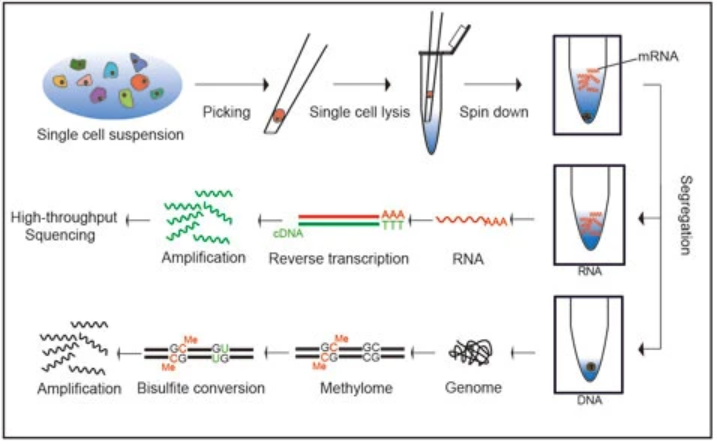

The scTrio-seq method was published by Hou et al. in Cell Research 26, 304-319. It uses gentle lysis to separate cytoplasm (where most mRNA is located) and nulcei, which achieves phycical separation of mRNA and genomic DNA. For the mRNA part, the Tang 2009 method was used for scRNA-seq, click here to see the step-by-step protocol; for the genomic DNA analyses, scRRBS method was used, and click here to see the step-by-step protocol.
